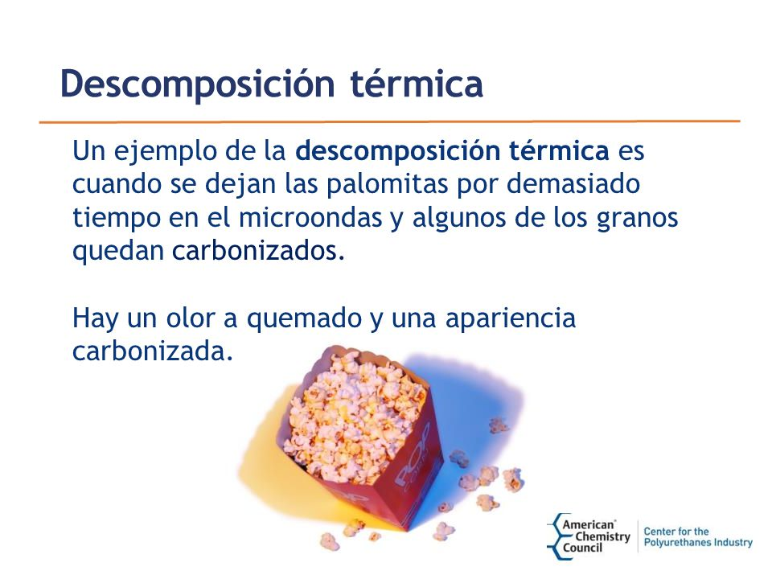
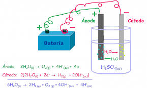
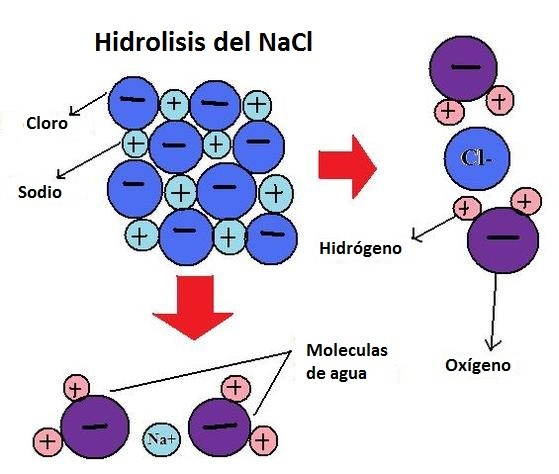

Las Reacciones de Descomposición:
Las Reacciones de Descomposición son aquellas que a partir de un compuesto se forman dos o más sustancias. En esta reacción los átomos que forman un compuesto se separan para dar los productos según la fórmula:
AB → A + B
donde A y B representan dos sustancias químicas cualesquiera.
Las Reacciones de Descomposición se producen por alguno de los siguientes motivos:
| Descomposición Térmica
 |
| Electrólisis
 |
| Hidrólisis
 |
A continuacion puedes acceder a este video donde te explicara bastante claro lo que refiere a la descomposicion y sus procesos
Las Reacciones de Descomposición son lo opuesto a las Reacciones de Combinación o Síntesis.